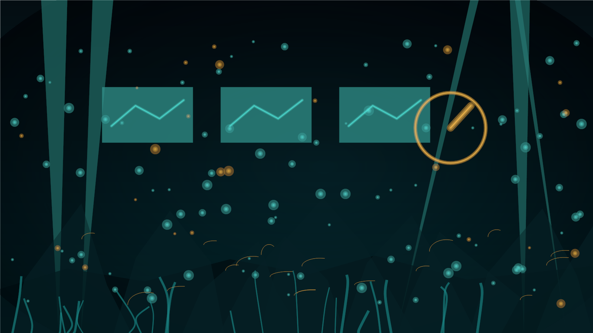

About
Blueprint Atlas is a route-first guide project
S2 Guide Hub is an independent fan-made website for players who want practical, source-aware help while Subnautica 2 changes through Early Access.

What the site is for
Blueprint Atlas focuses on high-value unlock routes instead of trying to become a full wiki or a full interactive map. Each future item page should explain why the unlock matters, what parts are required, what route is safest, what risks to avoid, and what useful extras can be collected on the same trip.
The first public build uses planning entries for items such as Feedback Resonator, Tadpole-related unlocks, Improved Fins, and depth modules. Exact coordinates and route timing should only be added after source checks or gameplay verification.
Verification policy
Early Access guide content can become outdated quickly. This site should not publish exact coordinates, creature behavior, resource spawns, component counts, route timing, or patch effects unless the claim is verified and dated.
Preferred labels include Confirmed, Observed, Needs gameplay check, Patch-sensitive, and Last checked. Planning entries are useful, but they should not pretend to be finished walkthroughs.
中文说明
S2 Guide Hub 是一个独立玩家攻略站。Blueprint Atlas / 蓝图路线图谱的目标不是复制完整地图或百科，而是帮助玩家判断哪些高价值解锁项值得追、需要什么部件、路线怎么规划、风险在哪里、顺路还能获得什么收益。
在内容被实测或来源核查之前，网站不会把精确坐标、组件数量、路线耗时或生物行为写成确定结论。